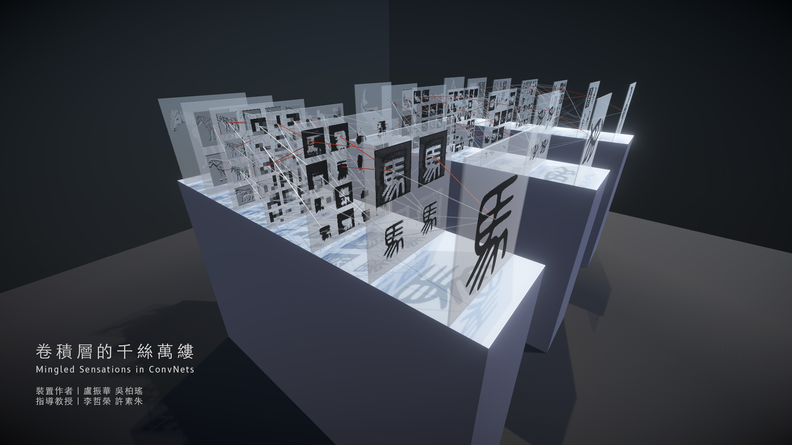
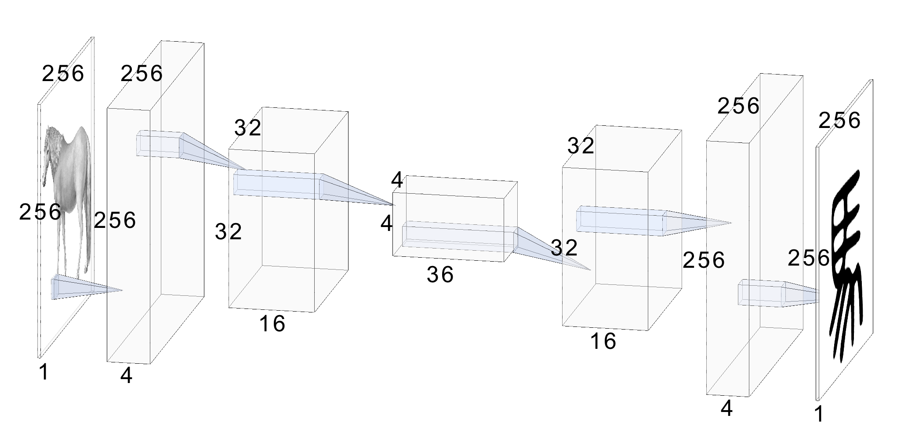
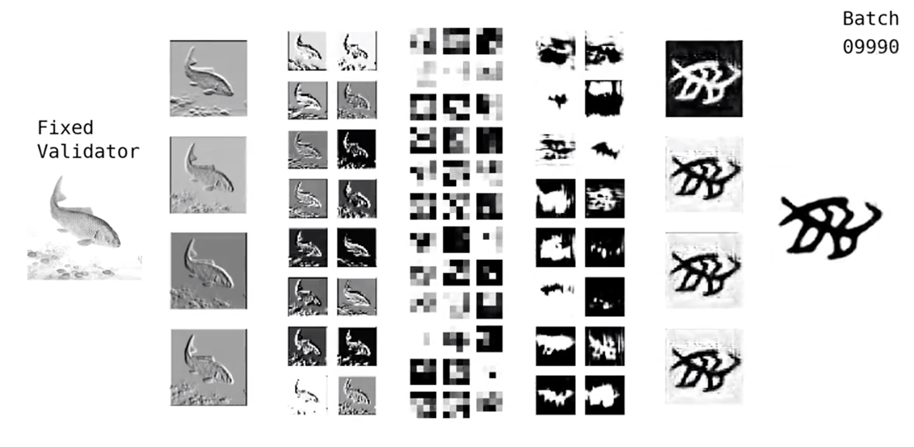

The Beauty of Representations of Convolutional Neural Network
Artificial Intelligence
2019-Present by Wu,Po-Yao / Lu,Chen-Hua

The recent advance in Artificial Intelligence (AI) did not only make significant success in science and engineering, but also brought a new wave to art fields. Unlike most AI driven or inspired artworks are presented in the digital forms, our work is a set of installation art pieces, named "The Beauty of Representations of Convolutional Neural Network", which reveals the algorithmic structure of Convolutional Neural Networks (CNNs), an image recognition model that pioneers modern AI systems.

The architectural design of CNN is trying to simulate the functions of neurons in the biological visual systems. Although no one knows exactly how the human brain works, the success of CNN indicates that such AI model captures the essences of how perception might be formed: deep layers and connections. Nevertheless, besides few experts, the architecture of CNN remains a black box to most people. As the CNN simulates the physical human brain in the cyberspace, our work brings the CNN model back to the physical world, and presents its architectural beauty in an analog form.

The reification of intelligence for the CNN model is carried out through the process of object recognition. Unlike the common CNN, which takes images and outputs categorized labels, our model appends a generative network that produces a human understandable symbol, the corresponding Chinese pictogram for the object in the input image. Such modification serves two purposes. First, it is a more intuitive way to comprehend the object recognition process, because an analogue symbol is more human understandable than a digital label. Second, the appearance of characters usually symbolizes the intellectual evolution that distinguishes human beings and other animals. The end-to-end transformation from images to characters represents not only the object recognition process run in CNN, but also a big step in the evolution of civilizations for human beings.
